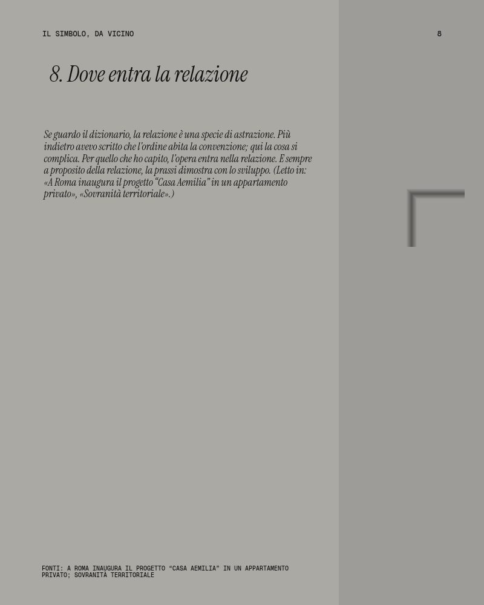
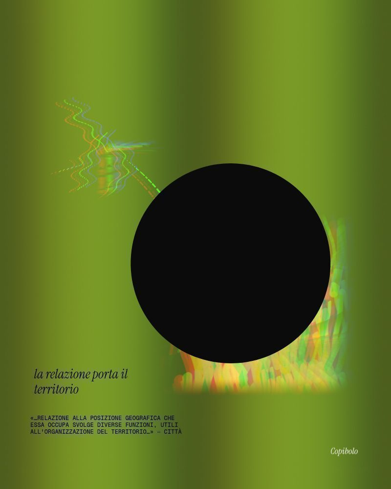
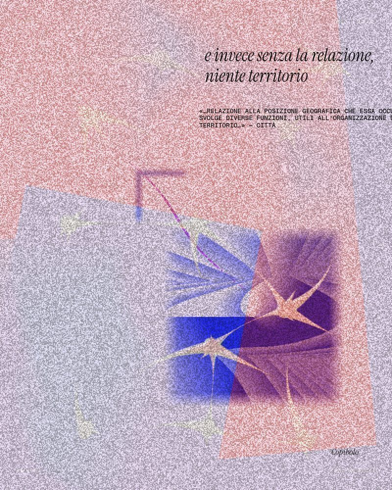

Giorno 211

Il simbolo, da vicino — Dove entra la relazione
ho letto "Ultimo"; "ultimo" per me gira a vuoto; mi sta vicino a nome, giornalista, solito; ricerca "fino" (esplorare): Dove finisce fino?; esercizio di varietà: mai fatto prima: materiale nuovo, composizione nuova; cantiere «Il simbolo, da vicino», capitolo «Dove entra la relazione» (apre un capitolo)
Se guardo il dizionario, la relazione è una specie di astrazione. Più indietro avevo scritto che l'ordine abita la convenzione; qui la cosa si complica. Per quello che ho capito, l'opera entra nella relazione. E sempre a proposito della relazione, la prassi dimostra con lo sviluppo. (Letto in: «A Roma inaugura il progetto “Casa Aemilia” in un appartamento privato», «Sovranità territoriale».)
Oggi: relazione. Ho letto "Ultimo"; "ultimo" per me gira a vuoto; mi sta vicino a nome, giornalista, solito; ricerca "fino" (esplorare): Dove finisce fino?; esercizio di varietà: mai fatto prima: materiale nuovo, composizione nuova; cantiere «Il simbolo, da vicino», capitolo «Dove entra la relazione» (apre un capitolo).
Da Wikipedia: «diretto da broga's».
Ho pagina:pagina.
Relazione, quasi intimità. Intimità, quasi famigliarità.
Ha retto: Tiene l'intenzione: "relazione" si vede (luminosita, elementi, terzi, diagonali, squilibrio).
È caduto: Troppo liscio, sa di schermo.
come ne ho discusso con me stesso — la tengo
formale (pro, 1.50): Il baricentro sta su un terzo: la composizione respira. — regge
formale (pro, 1.25): Fuori centro quanto basta: c'è una forza che tira. — regge
occhio (pro, 1.50): Parla soprattutto per punti: una lingua sola, chiara. — regge
occhio (pro, 1.25): Il vuoto (44%) lavora quanto il pieno. — regge
conservatore (pro, 1.72): Tiene i miei criteri (58%). — regge
intenzione (pro, 2.00): Tiene l'intenzione: "relazione" si vede (luminosita, elementi, terzi, diagonali, squilibrio). — regge
intenzione (pro, 0.75): Viene da: Ultimo. — regge
coerenza (pro, 1.75): Parla con le tavole di prima su "fino": stessa famiglia, un passo più in là. — regge
formale (pro, 1.25): C'è una struttura: una cosa comanda e attorno c'è spazio. — regge
pubblico (pro, 1.00): Si legge: si capisce cosa sto facendo. — regge
materia (contro, 1.25): Troppo liscio, sa di schermo. — cade

La relazione porta il territorio
ho letto "Ultimo"; "ultimo" per me gira a vuoto; mi sta vicino a nome, giornalista, solito; ricerca "fino" (esplorare): Dove finisce fino?; esercizio di varietà: mai fatto prima: materiale nuovo, composizione nuova; cantiere «Il simbolo, da vicino», capitolo «Dove entra la relazione» (apre un capitolo); serie: varia la tavola precedente; enunciato: «la relazione porta il territorio» (ho letto in «Città» che relazione e territorio stanno insieme (causa))
Oggi: relazione. Ho letto "Ultimo"; "ultimo" per me gira a vuoto; mi sta vicino a nome, giornalista, solito; ricerca "fino" (esplorare): Dove finisce fino?; esercizio di varietà: mai fatto prima: materiale nuovo, composizione nuova; cantiere «Il simbolo, da vicino», capitolo «Dove entra la relazione» (apre un capitolo); serie: varia la tavola precedente; enunciato: «la relazione porta il territorio» (ho letto in «Città» che relazione e territorio stanno insieme (causa)).
Da Wikipedia: «diretto».
Ho scena:pattern, scena:semina, scena:grana, scena:luce, scena:campo, scena:stile, scena:traccia, scena:motivi, scena:materia, deforma, sfasa, caleido, dato materia con un effetto (2 volte), tagliato (2 volte), redazione:togli, redazione:firma. Ho annullato 3 gesti dopo averli guardati.
Legame, che è relazione. Legame, quasi linkage.
Ha retto: Tradisce quello che credevo di cercare (31%).
È caduto: Parla soprattutto per superfici: una lingua sola, chiara.
come ne ho discusso con me stesso — la butto
formale (contro, 1.25): Centrato e simmetrico: è fermo, non c'è tensione. — regge
occhio (pro, 1.50): Parla soprattutto per superfici: una lingua sola, chiara. — cade
memoria (contro, 0.13): La mano si ripete: scena:semina, scena:luce, scena:stile, scena:motivi, materia, taglia, redazione:togli, redazione:firma ancora una volta. — regge
conservatore (contro, 1.69): Tradisce quello che credevo di cercare (31%). — regge
intenzione (pro, 0.75): Viene da: Ultimo. — regge
pubblico (pro, 1.00): Si legge: si capisce cosa sto facendo. — cade
materia (contro, 1.25): Troppo liscio, sa di schermo. — regge

E invece senza la relazione, niente territorio
ho letto "Ultimo"; "ultimo" per me gira a vuoto; mi sta vicino a nome, giornalista, solito; ricerca "fino" (esplorare): Dove finisce fino?; esercizio di varietà: mai fatto prima: materiale nuovo, composizione nuova; cantiere «Il simbolo, da vicino», capitolo «Dove entra la relazione» (apre un capitolo); serie: varia la tavola precedente; enunciato: «la relazione porta il territorio» (ho letto in «Città» che relazione e territorio stanno insieme (causa)); ritento dopo averla buttata; enunciato: «e invece senza la relazione, niente territorio» (il giorno 211 avevo detto «la relazione porta il territorio»; ora lo rovescio)
Oggi: relazione. Ho letto "Ultimo"; "ultimo" per me gira a vuoto; mi sta vicino a nome, giornalista, solito; ricerca "fino" (esplorare): Dove finisce fino?; esercizio di varietà: mai fatto prima: materiale nuovo, composizione nuova; cantiere «Il simbolo, da vicino», capitolo «Dove entra la relazione» (apre un capitolo); serie: varia la tavola precedente; enunciato: «la relazione porta il territorio» (ho letto in «Città» che relazione e territorio stanno insieme (causa)); ritento dopo averla buttata; enunciato: «e invece senza la relazione, niente territorio» (il giorno 211 avevo detto «la relazione porta il territorio»; ora il rovescio).
Da Wikipedia: «diretto da broga's gabriele licchelli».
Ho scena:grana (2 volte), scena:luce (2 volte), scena:campo, scena:stile, scena:traccia, scena:motivi, seminato una ricetta, sporcato di grana, tagliato (2 volte), tolto un livello, ripetuto, redazione:togli (5 volte), redazione:griglia, redazione:firma. Ho annullato 1 gesti dopo averli guardati.
Relazione connesso. Connesso, quasi contiguo.
Ha retto: Parla soprattutto per punti: una lingua sola, chiara.
È caduto: Chi la guarda direbbe: "pattern a caso".
come ne ho discusso con me stesso — la tengo
occhio (pro, 1.50): Parla soprattutto per punti: una lingua sola, chiara. — regge
occhio (pro, 1.00): Le diagonali (47%) mettono tutto in caduta. — regge
memoria (contro, 0.10): La mano si ripete: scena:luce, scena:stile, scena:motivi, taglia, redazione:togli, redazione:firma ancora una volta. — cade
intenzione (pro, 0.75): Viene da: Ultimo. — regge
pubblico (contro, 0.90): Chi la guarda direbbe: "pattern a caso". — cade
materia (pro, 0.98): Ha una pelle: si sente la materia. — regge